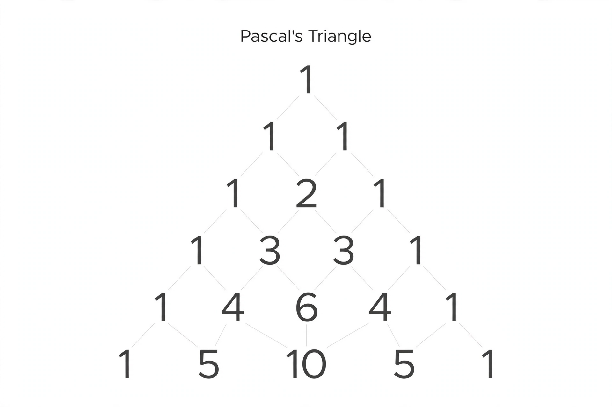

Pascal's triangle

[Image: A triangular array of numbers with each entry the sum of the two above it]
Pascal's triangle is a triangular arrangement of numbers in which each number is the sum of the two numbers directly above it. Its rows are the binomial coefficients, and it harbours an astonishing density of patterns: the counting numbers, triangular numbers, powers of 2 as row sums, and the Fibonacci numbers along its shallow diagonals.
The triangle was known to mathematicians in India (Pingala's era), China (Yang Hui, 13th century), and Persia (Omar Khayyam) long before Blaise Pascal's systematic treatise of 1654 gave it his name in the West.
Patterns
Colouring the odd entries black reveals a fractal — the Sierpiński triangle — emerging from pure arithmetic. The hockey-stick identity, shallow diagonals, and connections to probability (the triangle generates binomial probabilities) make it a standard exhibit of how one simple rule generates deep structure.
Pascal developed the triangle while founding probability theory in correspondence with Fermat — the same circle of ideas as his wager and the theory of expected value.